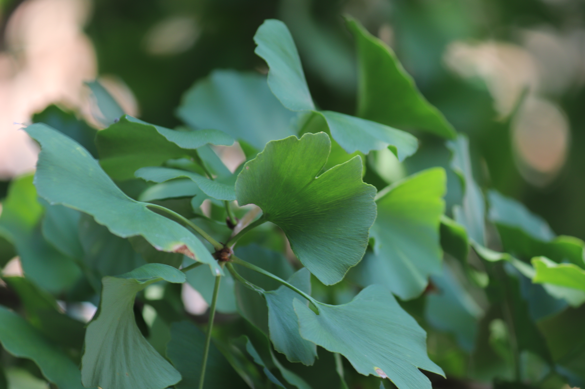

겉씨식물 은행나무과 은행나무속
은행나무(Ginkgo biloba)
“가을만 되면 지뢰로 바뀌는 악마의 나무”
낙엽성 교목으로 정원이나 가로수로 심긴다. 줄기는 곧고 가지는 위쪽을 향하여 비스듬이 자라 높이가 20~35 m 정도에 달한다
길이 5~10 cm의 잎은 오래된 가지에서는 홀로 나고 짧은 가지에서는 여러 개가 무더기로 난다.은행알은 10월에 황색으로 익는데 악취가 난다.
수나무의 짧은 가지에는 1~5개의 포자수가 길이 3~4 cm 정도의 자루에 달린다.